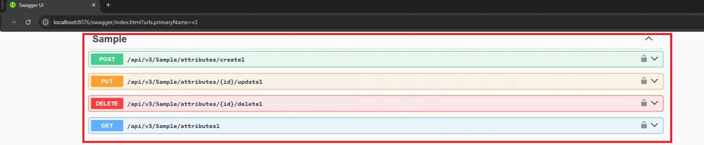

Сборка и размещение проекта
Выполните сборку проекта, указав в параметрах сборки платформу, на которой работает сервер приложений.
Скопируйте файл сборки в папку размещения сервера приложений:
- для ОС Windows - %Program Files(x86)5\ASCON\Loodsman\AppServer\WebLoodsmanPlugins\BackendPlugins
- для ОС Linux - /opt/ascon/loodsman/app-server/WebLoodsmanPlugins/BackendPlugins
Перезапустите службу сервера приложений
Для проверки того, что реализованный метод доступен в WEBAPI сервера приложений, откройте документацию, перейдя в браузере по адресу:
На открывшейся странице укажите версию API и выполните поиск реализованного метода